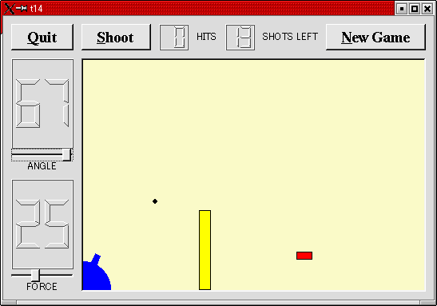

トップページ＞＞＞
「ぷろぐらみんぐ」目次＞＞＞
「Qt Tutorial Index Page」
Chapter 14: Facing the Wall(Wow!! It's Final Chapter!!)
初版作成：2002/01/11
- ソースコード
- 解説
- コンパイル・動作確認
- いじくりまわす
- 付録：cannon.h
- 付録：cannon.cpp
- 付録：gamebrd.cpp

お疲れさまでした。今回の作例でついに本チュートリアルも最終回です。
キーボードアクセラレータを追加し、さらにCannonFieldにマウスイベントを追加しました。また、CannonFieldの周りにフレーム
を追加し、さらにゲームの難易度を上げるため「壁」も表示するようにしました。
今回は cannon.h, cannon.cpp, gamebrd.cpp が変更されています。
付録：cannon.h
付録：cannon.cpp
付録：gamebrd.cpp
目次に戻る
それでは各ファイルごとに、ポイント部分の解説を行っていきます。
cannon.h
CannonFieldがマウスイベントを受け取るようになりました。砲塔をドラッグして角度を変化することが出来るようにします。
CannonFieldクラスに、壁を作るためのメンバ関数も加わりました。
protected:
void paintEvent( QPaintEvent * );
void mousePressEvent( QMouseEvent * );
void mouseMoveEvent( QMouseEvent * );
void mouseReleaseEvent( QMouseEvent * );
paintEventと似たような要領でマウスイベントもハンドリングできます。各マウスイベントの内容は関数名が表しています。
void paintBarrier( QPainter * );
このプライベートメンバ関数は壁を描きます。
QRect barrierRect() const;
このプライベートメンバ関数は壁を描くための矩形領域を返します。
bool barrelHit( const QPoint & ) const;
このプライベートメンバ関数は与えられた座標点が砲塔の内部にあるかどうか判定しています。
bool barrelPressed;
このプライベートメンバ変数は、ユーザがマウスを押下している間は TRUE です。
cannon.cpp
barrelPressed = FALSE;
コンストラクタに新たに上の一行が加わりました。初期状態でマウスは砲塔の上では押されていない、ということです。
} else if ( shotR.x() > width() || shotR.y() > height() ||
moveShot()での壁への当たり判定も忘れてはいけません。
void CannonField::mousePressEvent( QMouseEvent *e )
{
if ( e->button() != LeftButton )
return;
if ( barrelHit( e->pos() ) )
barrelPressed = TRUE;
}
これがQtのイベントハンドラです。マウスカーソルが該当ウィジェットの上にある状態でユーザーがマウスボタンをクリックすると
このイベントが発生します。
もしイベントが左マウスボタン以外からの場合は何もせずに戻ります。もしも左ボタンなら、マウスカーソルの位置が砲塔内部
にあるかどうかチェックします。もしあれば、barrelPressedをTRUEにします。
pos() 関数はウィジェット内部の座標系で値を返します。ようするにスクリーン座標ではなくクライアント座標で返し
ます。
void CannonField::mouseMoveEvent( QMouseEvent *e )
{
if ( !barrelPressed )
return;
QPoint pnt = e->pos();
if ( pnt.x() <= 0 )
pnt.setX( 1 );
if ( pnt.y() >= height() )
pnt.setY( height() - 1 );
double rad = atan(((double)rect().bottom()-pnt.y())/pnt.x());
setAngle( qRound ( rad*180/3.14159265 ) );
}
これはユーザーがマウスボタンを押した状態でマウスが移動したときに発生するイベントハンドラです。実は、Qt::setMouseTracking()
を使うとマウスキャプチャに似たことが出来ます。つまり、マウスボタンが押されていなくてもmouseMoveイベントを発生する
事が出来るのです。
今回のmouseMoveイベントハンドラでは、マウスカーソルの位置から角度をatanで逆算、それに応じた砲塔位置に変更しています。
最初にbarrelPressedがFALSEなら戻ります。続いてマウスカーソルの位置を取得します。もしマウスカーソルがウィジェットの
左端と下端を越えていれば、ウィジェット内部のぎりぎりに収まるように勝手に調節してます。
続いてatanにより角度を計算します。んで、setAngleで新しい角度を度数単位に変換して設定しています。
setAngle()は砲台を再描画することを思い出して下さい。
void CannonField::mouseReleaseEvent( QMouseEvent *e )
{
if ( e->button() == LeftButton )
barrelPressed = FALSE;
}
このQtイベントハンドラはウィジェット内でユーザーが（今まで押していた）マウスのボタンを離すと発生します。
左ボタンが離されれば、barrelPressedはFALSEとなります。
ペイントイベントハンドラに次の二行が加わっています。
if ( updateR.intersects( barrierRect() ) )
paintBarrier( &p );
paintBarrier()はpaintShot(), paintTarget(), paintCannon()と同様なシロモノです。
void CannonField::paintBarrier( QPainter *p )
{
p->setBrush( yellow );
p->setPen( black );
p->drawRect( barrierRect() );
}
このプライベートメンバ関数は壁を黒い縁で中を黄色で塗りつぶします。
QRect CannonField::barrierRect() const
{
return QRect( 145, height() - 100, 15, 100 );
}
このプライベート関数は壁の矩形領域を返します。壁の底辺をウィジェットの底辺に固定しています。
bool CannonField::barrelHit( const QPoint &p ) const
{
QWMatrix mtx;
mtx.translate( 0, height() - 1 );
mtx.rotate( -ang );
mtx = mtx.invert();
return barrelRect.contains( mtx.map(p) );
}
この関数は与えられた座標が砲塔内部なら TRUE を、そうでなければ FALSE を返します。
QWMatrixクラスを新たに使います。ヘッダファイルは qwmatrix.h ですが、qpainter.h に既にインクルードされています。
QWMatrixクラスは座標システムのマッピングを定義します。QPainterと同様の座標変換を実現します。
ここではpaintCannon()と同様の変換をかけています。最初に平行移動(translate)し、次に回転(rotate)をかけています。
ここでウィジェット座標系のp座標が砲塔内にあるかどうか判別します。私たちは逆座標変換を使っています。砲塔を描くときと
逆の座標変換をかけることにより、p 座標をマッピングして砲塔内にあるかどうかcontains()で確認することが出来ます。
gamebrd.cpp
#include <qaccel.h>
QAccelクラスの定義ファイルをインクルードしています。
QVBox *box = new QVBox( this, "cannonFrame" );
box->setFrameStyle( QFrame::WinPanel | QFrame::Sunken );
cannonField = new CannonField( box, "cannonField" );
ここでCannonFieldのウィジェットの外枠をデコレーションするためにQVBoxを利用しました。QVBoxを外枠のデコレーション機能
をもったコンストラクタで生成し、cannonFieldを子ウィジェットとして追加しています。
QAccel *accel = new QAccel( this );
accel->connectItem( accel->insertItem( Key_Enter ),
this, SLOT(fire()) );
accel->connectItem( accel->insertItem( Key_Return ),
this, SLOT(fire()) );
ここでキーボードイベントを監視してくれるQAccelクラスのオブジェクトを生成しています。QAccel、すなわちアクセラレータ
はアプリケーションへのキーボードイベントを監視し、もし特定のキーが押されたら対応するスロットを呼び出します。この
メカニズムはショートカットキーとも呼ばれています。
アクセラレータはウィジェットの子として生成されるので、親ウィジェットの破棄と共に破壊されてしまうことに注意して下さい。
QAccelはウィジェットではなく、親ウィジェットに何ら視覚的な影響を与えることはありません。
今回は二つのショートカットキーを定義しました。Enter キーが押されると fire() スロットを発動します。Control-Qが押され
るとアプリケーションを終了します。んでもって、中にはEnterとReturnの両方があるキーボードもあります。どちらもfire()を
発動させています。
accel->connectItem( accel->insertItem( CTRL+Key_Q ),
qApp, SLOT(quit()) );
Quitボタンにもショートカットキーが割り当ててありますので、Alt-QだとQuitボタンのショートカットです。んで、Control-Q
キーでもquit()スロットにつながるように変更しています。
CTRL, Key_Enter, Key_Return, Key_Q 等は全てQtが提供してくれている定数です。実際には Qt クラスのスコープに属します
ので、正確を期すなら Qt::Key_Enter 等と指定するべきです。が。基本的にQtの提供するすべてのクラスはQtの名前空間クラス
を継承していますので、スコープを指定しなくとも問題ありません。
QGridLayout *grid = new QGridLayout( this, 2, 2, 10 );
grid->addWidget( quit, 0, 0 );
grid->addWidget( box, 1, 1 );
grid->setColStretch( 1, 10 );
QVBoxのboxを今までのcannonFieldの代わりにつっこんでます。cannonFieldはboxにつっこまれています。
目次に戻る
んじゃあ、コンパイルしてみましょう。
[fenjin@seisyuu t14]$ ls
cannon.cpp gamebrd.cpp lcdrange.cpp main.cpp
cannon.h gamebrd.h lcdrange.h
[fenjin@seisyuu t14]$ progen -n t14 -o t14.pro
[fenjin@seisyuu t14]$ tmake -o Makefile t14.pro
[fenjin@seisyuu t14]$ make
g++ -c -pipe -Wall -W -O2 -DNO_DEBUG -I/usr/lib/qt/include -o cannon.o cannon.cp p
g++ -c -pipe -Wall -W -O2 -DNO_DEBUG -I/usr/lib/qt/include -o gamebrd.o gamebrd.cpp
g++ -c -pipe -Wall -W -O2 -DNO_DEBUG -I/usr/lib/qt/include -o lcdrange.o lcdrange.cpp
g++ -c -pipe -Wall -W -O2 -DNO_DEBUG -I/usr/lib/qt/include -o main.o main.cpp
/usr/lib/qt/bin/moc cannon.h -o moc_cannon.cpp
g++ -c -pipe -Wall -W -O2 -DNO_DEBUG -I/usr/lib/qt/include -o moc_cannon.o moc_cannon.cpp
/usr/lib/qt/bin/moc gamebrd.h -o moc_gamebrd.cpp
g++ -c -pipe -Wall -W -O2 -DNO_DEBUG -I/usr/lib/qt/include -o moc_gamebrd.o moc_gamebrd.cpp
/usr/lib/qt/bin/moc lcdrange.h -o moc_lcdrange.cpp
g++ -c -pipe -Wall -W -O2 -DNO_DEBUG -I/usr/lib/qt/include -o moc_lcdrange.o moc_lcdrange.cpp
g++ -o t14 cannon.o gamebrd.o lcdrange.o main.o moc_cannon.o moc_gamebrd.o moc_lcdrange.o
-L/usr/lib/qt/lib -L/usr/X11R6/lib -lqt -lXext -lX11 -lm
んで、実行ファイル t14 を実行すると冒頭に示したようなウインドウが表示されるわけです。
目次に戻る
お疲れさまでした。これにて Trolltech が用意したチュートリアル・プログラムはお仕舞いです。
これからはぜひ、examplesの中のソースやサンプルで遊んでQtに親しんでいただければ幸いです。
より詳しい解説はWebや、書籍を参照して下さい。TrolltechのHP上で良質の書籍を紹介しています。
Amazon.comなどでもQtをキーワードにして検索していただきますと、日本語の書籍も何冊か見つかります。
では、あなた自身のQtプログラミングをお楽しみ下さい。
おらあ、はあもう疲れただあよ（爆）。
目次に戻る
#ifndef CANNON_H
#define CANNON_H
class QTimer;
#include <qwidget.h>
class CannonField : public QWidget
{
Q_OBJECT
public:
CannonField( QWidget *parent=0, const char *name=0 );
int angle() const { return ang; }
int force() const { return f; }
bool gameOver() const { return gameEnded; }
bool isShooting() const;
QSize sizeHint() const;
QSizePolicy sizePolicy() const;
public slots:
void setAngle( int degrees );
void setForce( int newton );
void shoot();
void newTarget();
void setGameOver();
void restartGame();
private slots:
void moveShot();
signals:
void hit();
void missed();
void angleChanged( int );
void forceChanged( int );
void canShoot( bool );
protected:
void paintEvent( QPaintEvent * );
void mousePressEvent( QMouseEvent * );
void mouseMoveEvent( QMouseEvent * );
void mouseReleaseEvent( QMouseEvent * );
private:
void paintShot( QPainter * );
void paintTarget( QPainter * );
void paintBarrier( QPainter * );
void paintCannon( QPainter * );
QRect cannonRect() const;
QRect shotRect() const;
QRect targetRect() const;
QRect barrierRect() const;
bool barrelHit( const QPoint & ) const;
int ang;
int f;
int timerCount;
QTimer * autoShootTimer;
float shoot_ang;
float shoot_f;
QPoint target;
bool gameEnded;
bool barrelPressed;
};
#endif // CANNON_H
目次に戻る
#include "cannon.h"
#include <qtimer.h>
#include <qpainter.h>
#include <qpixmap.h>
#include <qdatetime.h>
#include <math.h>
#include <stdlib.h>
CannonField::CannonField( QWidget *parent, const char *name )
: QWidget( parent, name )
{
ang = 45;
f = 0;
timerCount = 0;
autoShootTimer = new QTimer( this, "movement handler" );
connect( autoShootTimer, SIGNAL(timeout()),
this, SLOT(moveShot()) );
shoot_ang = 0;
shoot_f = 0;
target = QPoint( 0, 0 );
gameEnded = FALSE;
barrelPressed = FALSE;
setPalette( QPalette( QColor( 250, 250, 200) ) );
newTarget();
}
void CannonField::setAngle( int degrees )
{
if ( degrees < 5 )
degrees = 5;
if ( degrees > 70 )
degrees = 70;
if ( ang == degrees )
return;
ang = degrees;
repaint( cannonRect(), FALSE );
emit angleChanged( ang );
}
void CannonField::setForce( int newton )
{
if ( newton < 0 )
newton = 0;
if ( f == newton )
return;
f = newton;
emit forceChanged( f );
}
void CannonField::shoot()
{
if ( isShooting() )
return;
timerCount = 0;
shoot_ang = ang;
shoot_f = f;
autoShootTimer->start( 50 );
emit canShoot( FALSE );
}
void CannonField::newTarget()
{
static bool first_time = TRUE;
if ( first_time ) {
first_time = FALSE;
QTime midnight( 0, 0, 0 );
srand( midnight.secsTo(QTime::currentTime()) );
}
QRegion r( targetRect() );
target = QPoint( 200 + rand() % 190,
10 + rand() % 255 );
repaint( r.unite( targetRect() ) );
}
void CannonField::setGameOver()
{
if ( gameEnded )
return;
if ( isShooting() )
autoShootTimer->stop();
gameEnded = TRUE;
repaint();
}
void CannonField::restartGame()
{
if ( isShooting() )
autoShootTimer->stop();
gameEnded = FALSE;
repaint();
emit canShoot( TRUE );
}
void CannonField::moveShot()
{
QRegion r( shotRect() );
timerCount++;
QRect shotR = shotRect();
if ( shotR.intersects( targetRect() ) ) {
autoShootTimer->stop();
emit hit();
emit canShoot( TRUE );
} else if ( shotR.x() > width() || shotR.y() > height() ||
shotR.intersects(barrierRect()) ) {
autoShootTimer->stop();
emit missed();
emit canShoot( TRUE );
} else {
r = r.unite( QRegion( shotR ) );
}
repaint( r );
}
void CannonField::mousePressEvent( QMouseEvent *e )
{
if ( e->button() != LeftButton )
return;
if ( barrelHit( e->pos() ) )
barrelPressed = TRUE;
}
void CannonField::mouseMoveEvent( QMouseEvent *e )
{
if ( !barrelPressed )
return;
QPoint pnt = e->pos();
if ( pnt.x() <= 0 )
pnt.setX( 1 );
if ( pnt.y() >= height() )
pnt.setY( height() - 1 );
double rad = atan(((double)rect().bottom()-pnt.y())/pnt.x());
setAngle( qRound ( rad*180/3.14159265 ) );
}
void CannonField::mouseReleaseEvent( QMouseEvent *e )
{
if ( e->button() == LeftButton )
barrelPressed = FALSE;
}
void CannonField::paintEvent( QPaintEvent *e )
{
QRect updateR = e->rect();
QPainter p( this );
if ( gameEnded ) {
p.setPen( black );
p.setFont( QFont( "Courier", 48, QFont::Bold ) );
p.drawText( rect(), AlignCenter, "Game Over" );
}
if ( updateR.intersects( cannonRect() ) )
paintCannon( &p );
if ( updateR.intersects( barrierRect() ) )
paintBarrier( &p );
if ( isShooting() && updateR.intersects( shotRect() ) )
paintShot( &p );
if ( !gameEnded && updateR.intersects( targetRect() ) )
paintTarget( &p );
}
void CannonField::paintShot( QPainter *p )
{
p->setBrush( black );
p->setPen( NoPen );
p->drawRect( shotRect() );
}
void CannonField::paintTarget( QPainter *p )
{
p->setBrush( red );
p->setPen( black );
p->drawRect( targetRect() );
}
void CannonField::paintBarrier( QPainter *p )
{
p->setBrush( yellow );
p->setPen( black );
p->drawRect( barrierRect() );
}
const QRect barrelRect(33, -4, 15, 8);
void CannonField::paintCannon( QPainter *p )
{
QRect cr = cannonRect();
QPixmap pix( cr.size() );
pix.fill( this, cr.topLeft() );
QPainter tmp( &pix );
tmp.setBrush( blue );
tmp.setPen( NoPen );
tmp.translate( 0, pix.height() - 1 );
tmp.drawPie( QRect( -35,-35, 70, 70 ), 0, 90*16 );
tmp.rotate( -ang );
tmp.drawRect( barrelRect );
tmp.end();
p->drawPixmap( cr.topLeft(), pix );
}
QRect CannonField::cannonRect() const
{
QRect r( 0, 0, 50, 50 );
r.moveBottomLeft( rect().bottomLeft() );
return r;
}
QRect CannonField::shotRect() const
{
const double gravity = 4;
double time = timerCount / 4.0;
double velocity = shoot_f;
double radians = shoot_ang*3.14159265/180;
double velx = velocity*cos( radians );
double vely = velocity*sin( radians );
double x0 = ( barrelRect.right() + 5 )*cos(radians);
double y0 = ( barrelRect.right() + 5 )*sin(radians);
double x = x0 + velx*time;
double y = y0 + vely*time - 0.5*gravity*time*time;
QRect r = QRect( 0, 0, 6, 6 );
r.moveCenter( QPoint( qRound(x), height() - 1 - qRound(y) ) );
return r;
}
QRect CannonField::targetRect() const
{
QRect r( 0, 0, 20, 10 );
r.moveCenter( QPoint(target.x(),height() - 1 - target.y()) );
return r;
}
QRect CannonField::barrierRect() const
{
return QRect( 145, height() - 100, 15, 100 );
}
bool CannonField::barrelHit( const QPoint &p ) const
{
QWMatrix mtx;
mtx.translate( 0, height() - 1 );
mtx.rotate( -ang );
mtx = mtx.invert();
return barrelRect.contains( mtx.map(p) );
}
bool CannonField::isShooting() const
{
return autoShootTimer->isActive();
}
QSize CannonField::sizeHint() const
{
return QSize( 400, 300 );
}
QSizePolicy CannonField::sizePolicy() const
{
return QSizePolicy( QSizePolicy::Expanding, QSizePolicy::Expanding );
}
目次に戻る
#include "gamebrd.h"
#include <qfont.h>
#include <qapplication.h>
#include <qlabel.h>
#include <qaccel.h>
#include <qpushbutton.h>
#include <qlcdnumber.h>
#include <qlayout.h>
#include <qvbox.h>
#include "lcdrange.h"
#include "cannon.h"
GameBoard::GameBoard( QWidget *parent, const char *name )
: QWidget( parent, name )
{
QPushButton *quit = new QPushButton( "&Quit", this, "quit" );
quit->setFont( QFont( "Times", 18, QFont::Bold ) );
connect( quit, SIGNAL(clicked()), qApp, SLOT(quit()) );
LCDRange *angle = new LCDRange( "ANGLE", this, "angle" );
angle->setRange( 5, 70 );
LCDRange *force = new LCDRange( "FORCE", this, "force" );
force->setRange( 10, 50 );
QVBox *box = new QVBox( this, "cannonFrame" );
box->setFrameStyle( QFrame::WinPanel | QFrame::Sunken );
cannonField = new CannonField( box, "cannonField" );
connect( angle, SIGNAL(valueChanged(int)),
cannonField, SLOT(setAngle(int)) );
connect( cannonField, SIGNAL(angleChanged(int)),
angle, SLOT(setValue(int)) );
connect( force, SIGNAL(valueChanged(int)),
cannonField, SLOT(setForce(int)) );
connect( cannonField, SIGNAL(forceChanged(int)),
force, SLOT(setValue(int)) );
connect( cannonField, SIGNAL(hit()),
this, SLOT(hit()) );
connect( cannonField, SIGNAL(missed()),
this, SLOT(missed()) );
QPushButton *shoot = new QPushButton( "&Shoot", this, "shoot" );
shoot->setFont( QFont( "Times", 18, QFont::Bold ) );
connect( shoot, SIGNAL(clicked()), SLOT(fire()) );
QPushButton *restart
= new QPushButton( "&New Game", this, "newgame" );
restart->setFont( QFont( "Times", 18, QFont::Bold ) );
connect( restart, SIGNAL(clicked()), this, SLOT(newGame()) );
hits = new QLCDNumber( 2, this, "hits" );
shotsLeft = new QLCDNumber( 2, this, "shotsleft" );
QLabel *hitsL = new QLabel( "HITS", this, "hitsLabel" );
QLabel *shotsLeftL
= new QLabel( "SHOTS LEFT", this, "shotsleftLabel" );
QAccel *accel = new QAccel( this );
accel->connectItem( accel->insertItem( Key_Enter ),
this, SLOT(fire()) );
accel->connectItem( accel->insertItem( Key_Return ),
this, SLOT(fire()) );
accel->connectItem( accel->insertItem( CTRL+Key_Q ),
qApp, SLOT(quit()) );
QGridLayout *grid = new QGridLayout( this, 2, 2, 10 );
grid->addWidget( quit, 0, 0 );
grid->addWidget( box, 1, 1 );
grid->setColStretch( 1, 10 );
QVBoxLayout *leftBox = new QVBoxLayout;
grid->addLayout( leftBox, 1, 0 );
leftBox->addWidget( angle );
leftBox->addWidget( force );
QHBoxLayout *topBox = new QHBoxLayout;
grid->addLayout( topBox, 0, 1 );
topBox->addWidget( shoot );
topBox->addWidget( hits );
topBox->addWidget( hitsL );
topBox->addWidget( shotsLeft );
topBox->addWidget( shotsLeftL );
topBox->addStretch( 1 );
topBox->addWidget( restart );
angle->setValue( 60 );
force->setValue( 25 );
angle->setFocus();
newGame();
}
void GameBoard::fire()
{
if ( cannonField->gameOver() || cannonField->isShooting() )
return;
shotsLeft->display( shotsLeft->intValue() - 1 );
cannonField->shoot();
}
void GameBoard::hit()
{
hits->display( hits->intValue() + 1 );
if ( shotsLeft->intValue() == 0 )
cannonField->setGameOver();
else
cannonField->newTarget();
}
void GameBoard::missed()
{
if ( shotsLeft->intValue() == 0 )
cannonField->setGameOver();
}
void GameBoard::newGame()
{
shotsLeft->display( 15 );
hits->display( 0 );
cannonField->restartGame();
cannonField->newTarget();
}
目次に戻る
トップページ＞＞＞
「ぷろぐらみんぐ」目次＞＞＞
「Qt Tutorial Index Page」